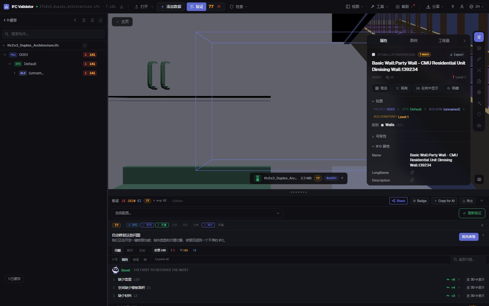
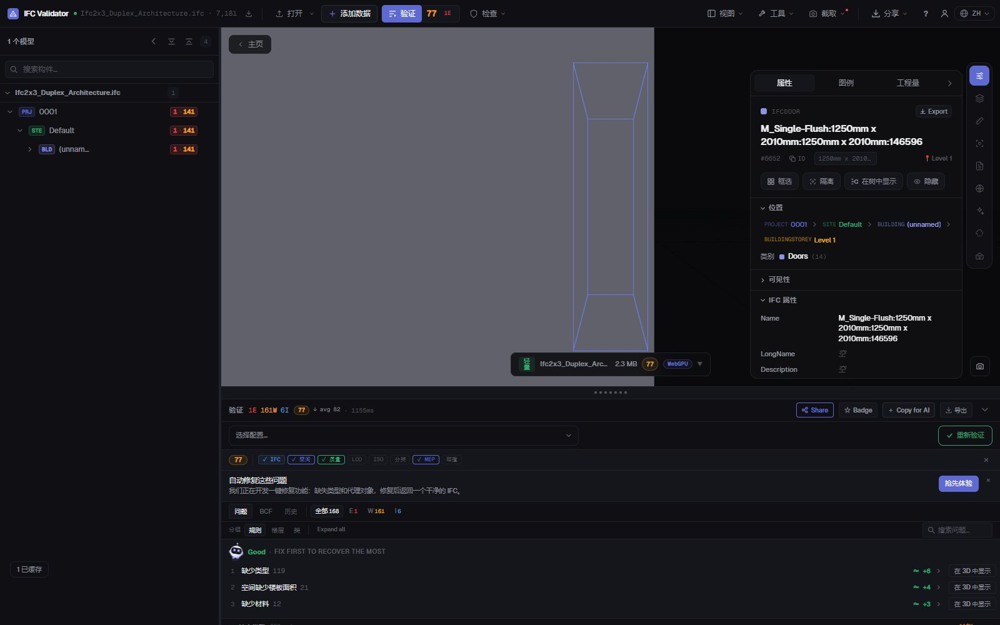

免费 IFC 编辑器
在浏览器中在线使用
打开 IFC 文件，选择任意构件并修正问题：名称、LongName、属性值或所在楼层。每项修改都可撤销，结果导出为标准 IFC，可在您的 BIM 软件中重新打开。文件不会离开您的电脑。
编辑 IFC 文件 — 免费 →无需账号 · 不上传任何内容 · 在浏览器中运行 · 免费

功能
无需 Revit、ArchiCAD 或许可证即可编辑 IFC
用于那些原本要退回给作者的修正：快速、可撤销，并保存为真正的 IFC。
重命名构件
修改任意构件的 Name 和 LongName，或用模板（{class}、{storey}、{n}）一次性重命名所有重复或空名称。
修改属性值
修改构件属性集中已有属性的值（Pset_WallCommon、自定义属性集等）。
修复 GUID
一键重新生成重复或格式错误的 GlobalId——最常见的导出错误。
调整楼层
当构件被导出到错误楼层时，将其重新归属到其他空间容器。
全部可撤销
每项修改都是可撤销和重做的命令；导出前不会改动原始文件。
导出 IFC 或 GLB
将编辑后的模型下载为 IFC（与原文件相同的架构）或用于网页和 AR 的 GLB。
截图

常见问题
常见问题
有免费的在线 IFC 编辑器吗？
有。IFC Viewer Online 对任何用途免费，包括商业项目。打开页面，拖入 .ifc 文件即可在浏览器中编辑——无需安装、无需账号、不上传，文件通过 WebAssembly 在本地读取。
可以修改 IFC 文件中的哪些内容？
构件名称（Name、LongName）、已有属性的值、GlobalId 以及构件所属的空间容器，也可以批量重命名。它不是建模工具：不编辑几何。
编辑后的 IFC 能在 Revit、ArchiCAD 或 Solibri 中打开吗？
能。导出会按原文件架构（IFC2x3、IFC4、IFC4x3）写出包含您修改的标准 IFC，能读原文件的软件都能读取。
我的模型会被上传吗？
不会。读取、编辑和导出都在浏览器中完成，可在 DevTools 中确认没有请求携带文件。适用于保密项目，加载后也可离线使用。
编辑后可以检查模型吗？
可以——同一应用用 44 条质量规则检查文件并给出 0–100 的 Health Score，修正后即可看到分数提升。